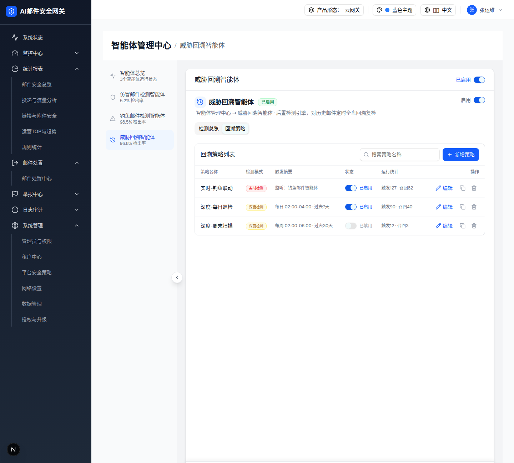
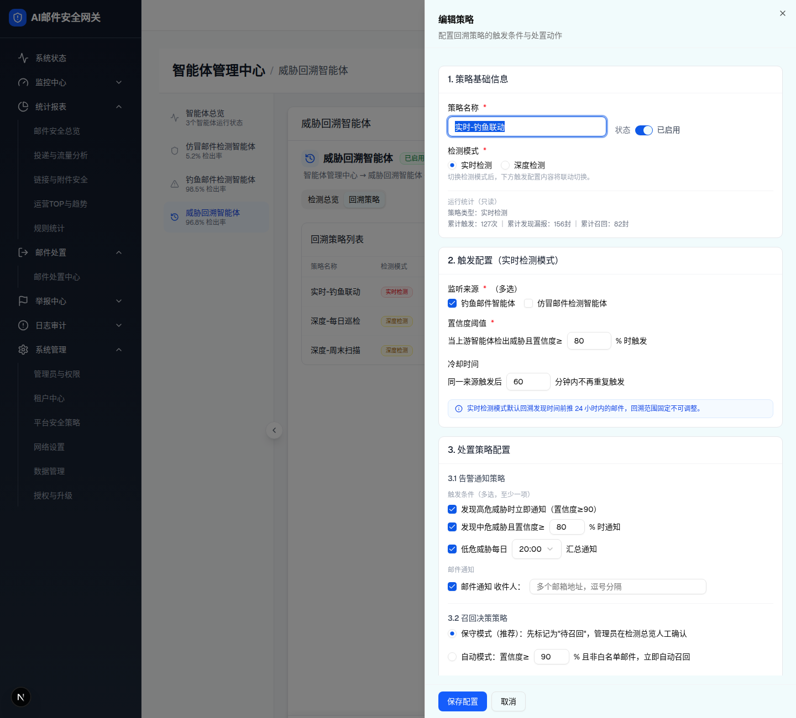
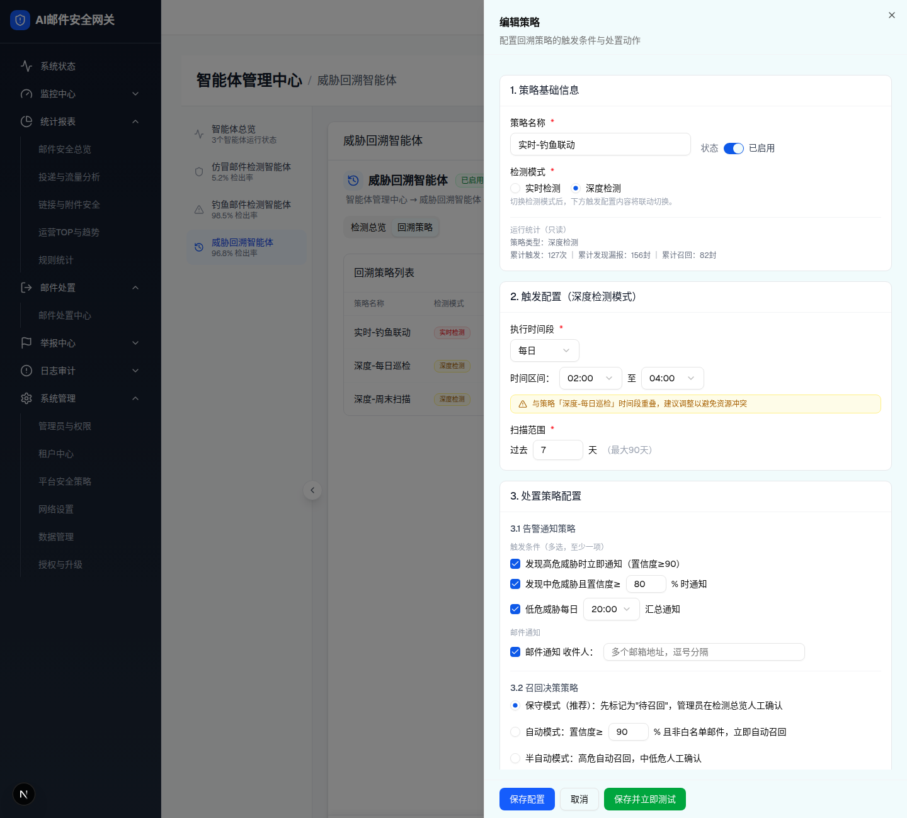

| 所属组件 | 2.6 回溯策略页签 |
| 主文件 | index.html |
| 触发路径 | Tabs 切“回溯策略” → 列表；“编辑”/“新增策略” → Sheet 抽屉；抽屉内切换检测模式 → 触发配置联动 |
| demo 源 | threat-retrospect-agent-v1.tsx 762-1162 行 |

| 策略名称 | 检测模式 | 触发摘要 | 状态 | 运行统计 | 操作 |
|---|---|---|---|---|---|
| 实时-钓鱼联动 | 实时检测 | 监听：钓鱼邮件智能体 | 已启用 | 触发127 · 召回82 | |
| 深度-每日巡检 | 深度检测 | 每日 02:00-04:00 · 过去7天 | 已启用 | 触发90 · 召回40 | |
| 深度-周末扫描 | 深度检测 | 每周 02:00-06:00 · 过去30天 | 已禁用 | 触发12 · 召回3 |
| 列 | 字段 | 渲染 |
|---|---|---|
| 策略名称 | name | 加粗 |
| 检测模式 | mode | Badge：实时检测(红)/深度检测(黄) |
| 触发摘要 | - | 实时“监听：{来源}”；深度“{周期} {start}-{end} · 过去{N}天” |
| 状态 | enabled | 行内 Switch + “已启用/已禁用” |
| 运行统计 | stats | “触发{triggers} · 召回{recalled}” |
| 操作 | - | 编辑(Pencil) / 克隆(Copy,Tooltip) / 删除(Trash2) |
| 策略 | 模式 | 触发摘要 | 状态 | 运行统计 |
|---|---|---|---|---|
| 实时-钓鱼联动 | 实时检测 | 监听：钓鱼邮件智能体 | 已启用 | 触发127 · 召回82 |
| 深度-每日巡检 | 深度检测 | 每日 02:00-04:00 · 过去7天 | 已启用 | 触发90 · 召回40 |
| 深度-周末扫描 | 深度检测 | 每周 02:00-06:00 · 过去30天 | 已禁用 | 触发12 · 召回3 |
顶部：搜索框（占位“搜索策略名称”，按 name 过滤）+ “新增策略”蓝按钮（Plus）。搜索无结果显示空态“未找到匹配策略 + 清空搜索”。克隆生成“{name}-副本”，删除弹二次确认。
点击抽屉内“检测模式”的 深度检测 / 实时检测 单选切换两套真实抽屉 DOM（深度模式多出 执行时间段/扫描范围 与“保存并立即测试”按钮）。


| 区块 | 实时检测 | 深度检测 |
|---|---|---|
| 触发配置字段 | 监听来源(多选)、置信度阈值、冷却时间、24h 固定回溯提示 | 执行时间段(每日/每周/每月+星期/日)、时间区间(start-end)、扫描范围(过去N天) |
| 底部按钮 | 保存配置 / 取消 | 保存配置 / 取消 / 保存并立即测试(绿) |
| 字段 | 规则 | 错误文案 |
|---|---|---|
| 策略名称 | 必填，≤50 字符 | 请输入策略名称 |
| 置信度阈值（实时） | 1-100 | 置信度阈值范围为 1-100 |
| 冷却时间（实时） | 5-1440 分钟 | 冷却时间范围为 5-1440 分钟 |
| 监听来源（实时） | 至少一项 | 请至少选择一个监听来源 |
| 时间区间（深度） | 结束>起始，不跨天 | 结束时间必须晚于起始时间，且不支持跨天 |
| 扫描范围（深度） | 1-90 天 | 扫描范围为 1-90 天 |
| 星期（深度/每周） | 至少一天 | 请至少选择一天 |
| 告警触发条件 | 至少一项 | 请至少选择一项触发条件 |
| 召回范围 | 至少一项 | 请至少选择一项召回范围 |
| 邮件收件人 | 启用时逐个邮箱格式校验 | 存在无效邮箱地址：{列表} |
校验失败时红框(border-red-400)+字段错误文案，且保存被拦截并 Toast“请完善必填项并修正校验错误”。特殊提示：监听来源含“仿冒邮件检测智能体”→ 黄色离线提示；深度时间段与其它深度策略重叠 → 黄色 overlapWarn。未保存修改关闭抽屉 → 弹“配置尚未保存，确认离开？”。
| 比对项 | demo 实际 DOM（提取） | 预览 HTML | 一致 |
|---|---|---|---|
| 策略列表 | div.rounded-lg.border > 头部(搜索“搜索策略名称”+“新增策略”蓝按钮) + 3 行策略(实时-钓鱼联动/深度-每日巡检/深度-周末扫描) | 真实提取 DOM | ✅ |
| 行内 Switch | button[role=switch]（前两条 checked，第三条 unchecked） | 真实提取 DOM | ✅ |
| 抽屉根 | Sheet [role=dialog][data-slot=sheet-content] 右侧面板（预览中去除 fixed 定位） | 真实提取 DOM | ✅ |
| 标题 | 编辑态“编辑策略” | 真实提取 DOM | ✅ |
| 三区块 | 1.策略基础信息 / 2.触发配置(实时/深度检测模式) / 3.处置策略配置 | 真实提取 DOM | ✅ |
| 模式联动 | 切“深度检测”→区块2 换为 执行时间段/时间区间/扫描范围，底部多出“保存并立即测试”(绿) | 点击“深度检测”切换到真实深度抽屉 DOM（含 执行时间段/扫描范围/保存并立即测试/时间段重叠警告） | ✅ |
| 3.3 召回范围 | 已投递/投递中队列/已读，前两项默认选中 | 真实提取 DOM | ✅ |